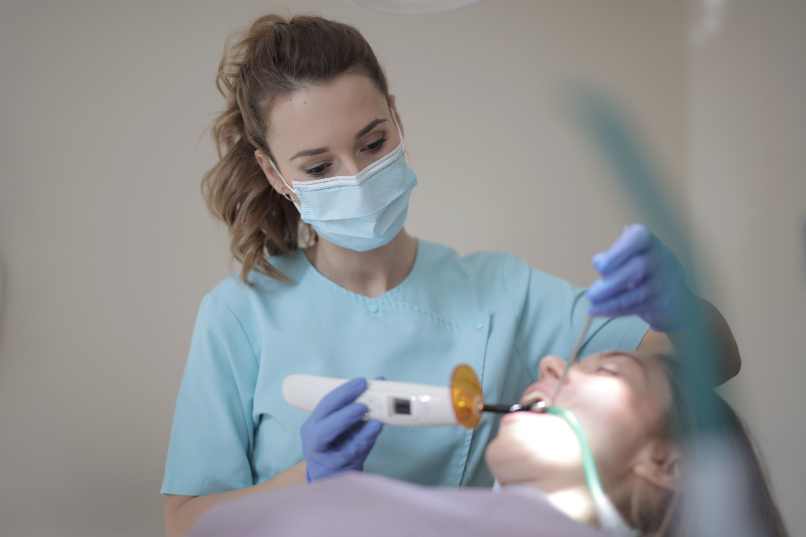
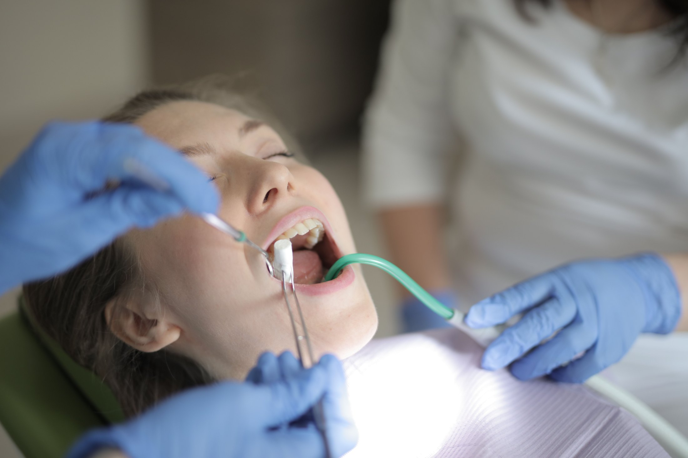
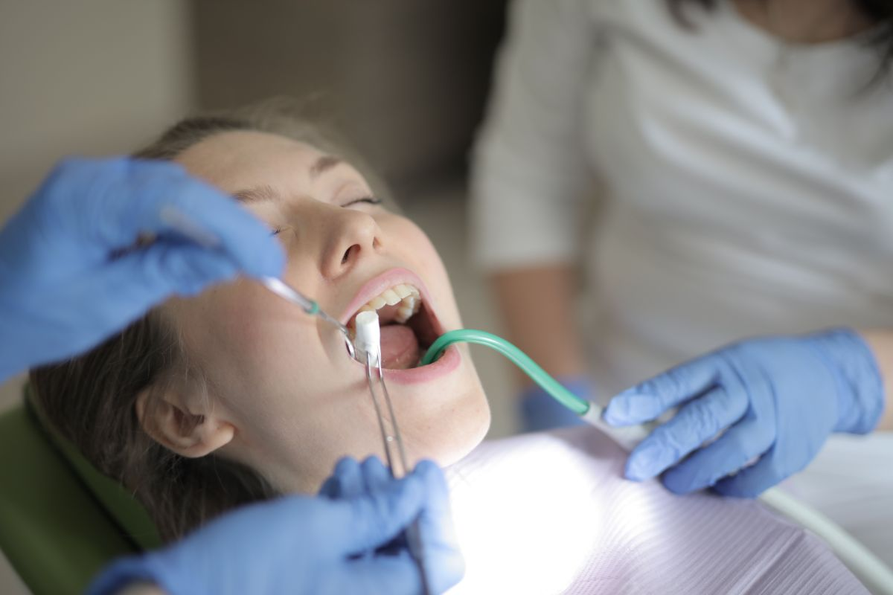
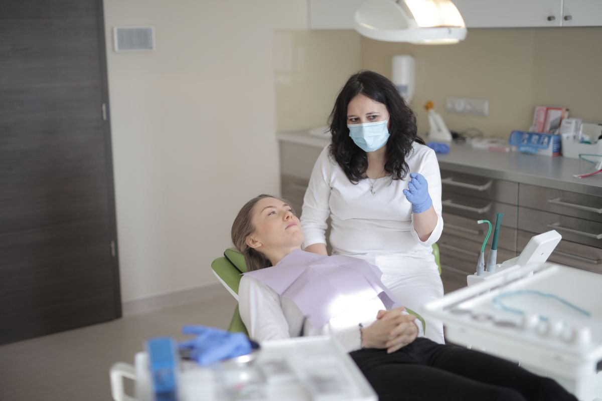
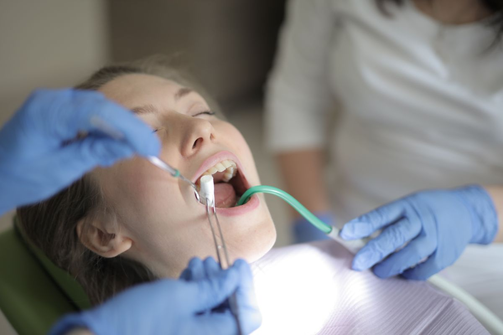

Clínica dental · Puerto Varas
Una hora. Y sale sabiendo exactamente qué tiene.
Lo que frena a alguien no es el dolor: es no saber qué le van a hacer ni cuánto le va a costar. Abajo está la primera cita completa, minuto a minuto.
La pieza que mata el miedo a llamar
La primera cita, minuto a minuto.
Nadie deja de ir al dentista por el precio: deja de ir porque no sabe qué va a pasar. Esto es la hora completa, en orden. Los minutos son un promedio, no un cronómetro.
-
00—05
Ficha y motivo
Qué le pasa, desde cuándo, qué toma y qué enfermedades tiene. Los medicamentos importan más de lo que parece: cambian lo que se puede hacer ese mismo día.
-
05—20
Examen de la boca
Diente por diente, encías, mordida y articulación. Acá salen las cosas que uno no siente todavía — que suelen ser las baratas de arreglar.
-
20—30
Radiografías, si hacen falta
No siempre se piden. Cuando se piden es porque hay algo que no se ve a simple vista, y se le explica qué se está buscando antes de tomarlas.
-
30—45
El plan, en orden de urgencia
Qué hay que hacer ahora, qué puede esperar y qué es opcional. Separado así, y no como una lista suelta: es la diferencia entre un presupuesto que asusta y uno que se entiende.
-
45—55
Recién acá se habla de plata
Con el plan sobre la mesa: cuánto vale cada cosa, en qué orden conviene hacerlas y qué cubre su previsión. Nunca antes del examen — cotizar sin mirar es adivinar.
-
55—60
Qué se lleva por escrito
El plan con los valores y las próximas horas. Se va con papel en la mano, no con una cifra que hay que recordar.
Cada boca es distinta y esto es el orden de una evaluación, no una promesa de tratamiento. Lo que se hace, se decide con usted sentado en el sillón.

Lo caro no es tratarse. Es esperar.
Una caries chica se arregla en una sesión. La misma caries en un año puede ser un tratamiento de conducto.
Especialidades
Qué se resuelve acá.
Esta lista es ejemplo hasta que la clínica la confirme contra lo que realmente ofrece.
Odontología general
Evaluación, obturaciones y control periódico.
Limpieza y encías
Destartraje y tratamiento periodontal.
Endodoncia
Tratamiento de conducto cuando el nervio está comprometido.
Estética
Blanqueamiento, carillas y restauraciones visibles.
Rehabilitación
Coronas, puentes y prótesis.
Ortodoncia
Evaluación y derivación o tratamiento según el caso.
El equipo
Ocho mil personas ya los siguen.
Odonthos tiene 8.249 seguidores en Instagram. Esa audiencia ya está ganada y es más grande que la de casi cualquier clínica de la zona.
Lo que falta es el lugar donde esa audiencia aterriza. Hoy llega a una plantilla que no la aprovecha: no la ordena, no la convierte en horas agendadas y no aparece en Google cuando alguien busca «dentista Puerto Varas» sin conocerlos.
-
Profesional 1
Nombre, especialidad y en qué se enfoca. Un paciente elige a una persona, no a una clínica.
-
Profesional 2
Con cara y nombre, el que llega por Instagram ya sabe con quién se va a sentar.
-
Profesional 3
Se agregan o se quitan fichas: la grilla se acomoda sola.
Por qué una página propia
Esta página pesa menos que una foto.
No es un argumento de vendedor: es medible, y usted lo acaba de comprobar al abrirla. Estos son los números de lo que está leyendo ahora.
- 0peticiones a servidores de terceros
- 0rastreadores y cookies
- 1archivo de estilos, escrito a mano
- 100%del contenido legible sin JavaScript
Una plantilla carga decenas de archivos de terceros antes de mostrar la primera letra. Eso es lo que Google mide, y es lo que decide si aparecen ustedes o la clínica de al lado.

«Del presupuesto se habla al minuto cuarenta y cinco. Nunca antes de mirar.»
La clínica
Cómo se trabaja.



Agendar
Pedir la primera hora.
Con el motivo escrito, la clínica reserva el tiempo que corresponde: no es lo mismo una evaluación que una urgencia.
- Dónde están
- Puerto Varas
- Dónde están hoy
- Instagram @clinicaodonthospv · 8.249 seguidores
- Web actual
- clinicaodonthos.cl — hecha con plantilla
- Teléfono y horario
- Los que publiquen sus redes
Armar el mensaje
Sin JavaScript el enlace al Instagram sigue funcionando. Lo único que se pierde es que el texto se arme solo.
Para el dueño
Qué es esto y qué falta.
Qué es
Una propuesta de sitio web hecha por nuestra cuenta. Odonthos no la encargó ni la ha revisado. Dimos por cierto sólo lo que ustedes publican: el Instagram con 8.249 seguidores y que hoy tienen sitio en clinicaodonthos.cl.
Qué es ejemplo
La lista de especialidades, el teléfono y el horario. Los minutos de la primera cita son un promedio de oficio y así está dicho. Las tres fichas del equipo están vacías: no inventamos nombres de profesionales.
Sobre el sitio que ya tienen
No hay nada malo en haber partido con una plantilla — la mayoría parte así. La diferencia está en el peso y en la velocidad, que es lo que Google mide. Los cuatro números de más arriba son de esta página, comprobables ahora mismo.